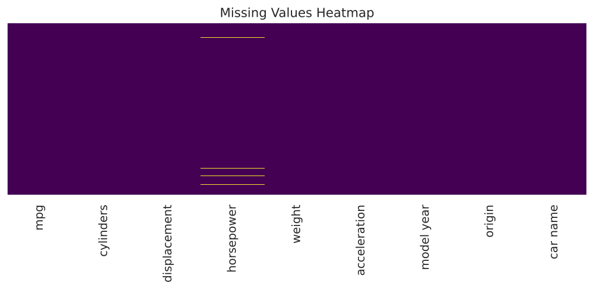
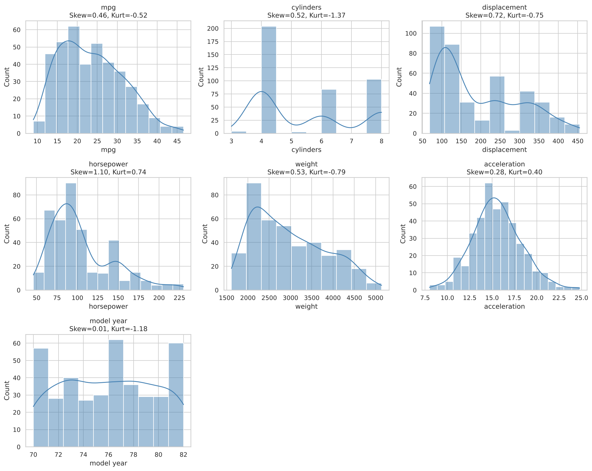
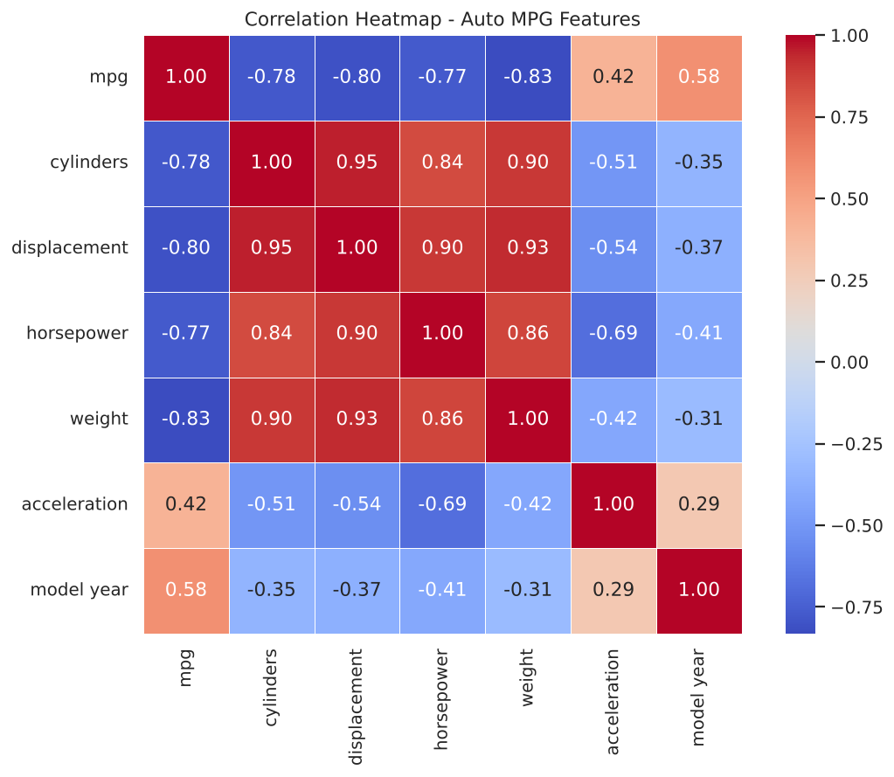
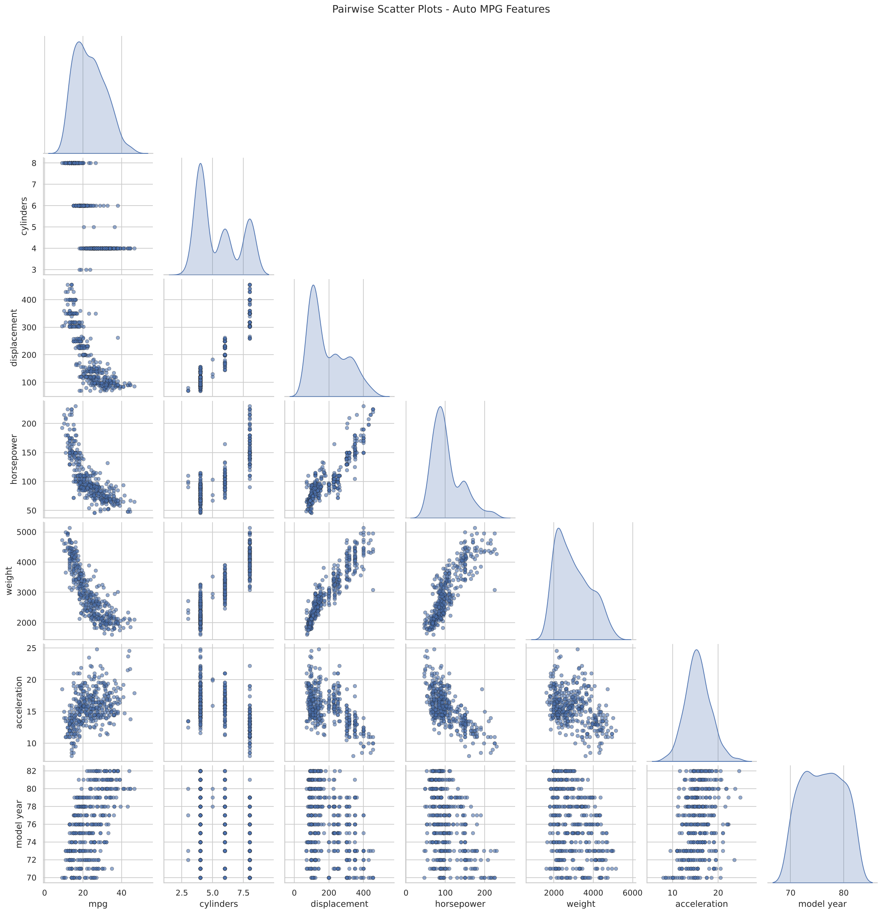
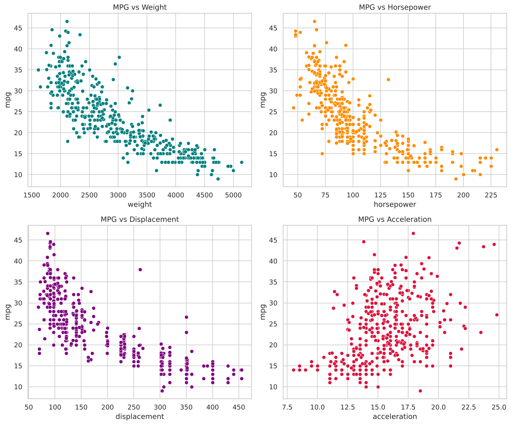
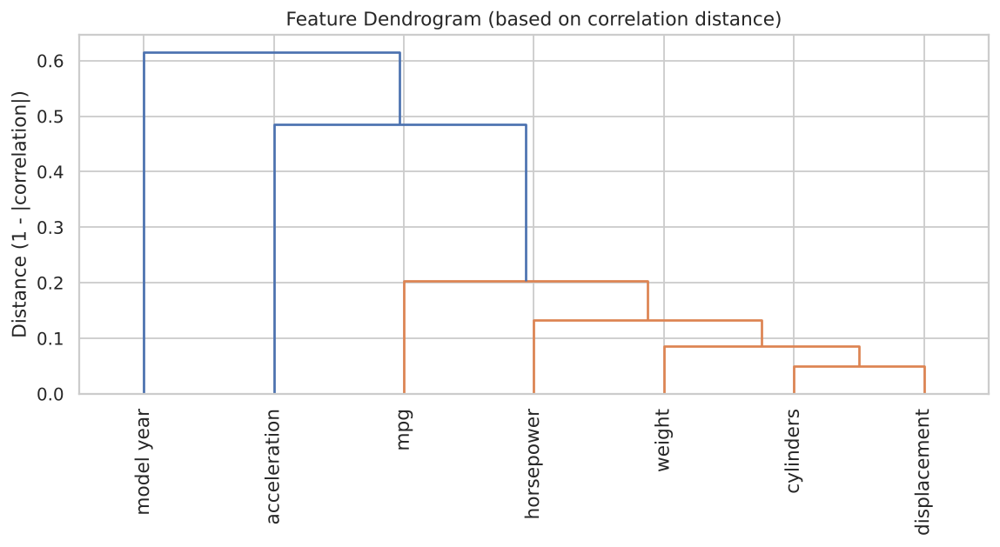
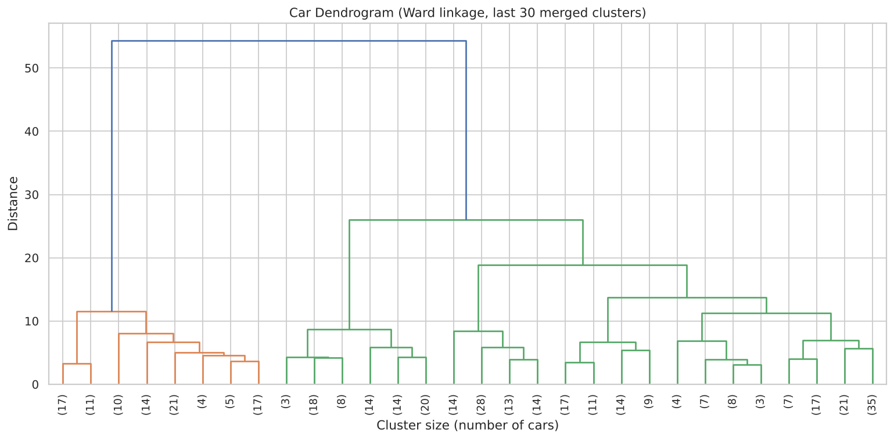
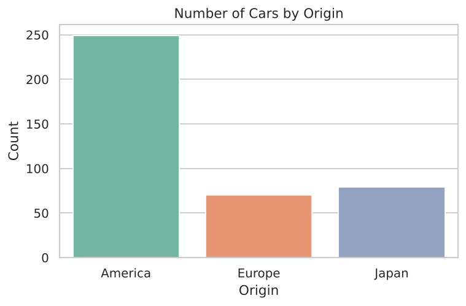

Unit 2 — Exploratory Data Analysis
Exploratory data analysis of the Auto MPG dataset: missing values, skewness and kurtosis, correlation, scatter plots, hierarchical clustering and categorical encoding.
Auto MPG — Exploratory Data Analysis Report
Dataset
398 cars, 9 variables (mpg, cylinders, displacement, horsepower, weight, acceleration, model year, origin, car name). Source: UCI Auto MPG dataset (Unit02_auto-mpg__1_.csv).
Missing values
Only horsepower has gaps: 6 of 398 rows (1.5%), originally marked ?. Imputed with the column median.

Skewness & kurtosis
| Variable | Skewness | Kurtosis |
|---|---|---|
| horsepower | 1.10 | 0.74 |
| displacement | 0.72 | -0.75 |
| weight | 0.53 | -0.79 |
| cylinders | 0.53 | -1.37 |
| mpg | 0.46 | -0.52 |
| acceleration | 0.28 | 0.40 |
| model year | 0.01 | -1.18 |
horsepower is the most right-skewed and the only variable with heavier-than-normal tails (positive kurtosis); the rest are mildly skewed and flatter than normal.

Correlation
Correlation with mpg:
| Variable | r with mpg |
|---|---|
| weight | -0.83 |
| displacement | -0.80 |
| cylinders | -0.78 |
| horsepower | -0.77 |
| model year | 0.58 |
| acceleration | 0.42 |
weight, displacement, cylinders, and horsepower are also strongly correlated with each other (0.85–0.95) — they move together as "engine size", and all move opposite to mpg.

Scatter plots
mpg declines with weight, displacement, and horsepower, each showing a curved (non-linear) downward trend. acceleration and model year show a weaker positive relationship with mpg — newer, quicker-accelerating cars trend slightly more efficient.


Hierarchical clustering
Feature dendrogram: weight, displacement, horsepower, and cylinders merge into one tight cluster, confirming the correlation structure; mpg branches off separately. Car dendrogram (Ward linkage): splits broadly into large domestic cars vs. smaller, more fuel-efficient imports.


Categorical encoding
origin was already numeric: 1 = America (249 cars), 2 = Europe (70), 3 = Japan (79). American cars dominate the sample (~63%).

Conclusion
Fuel economy is driven mainly by engine/vehicle size (weight, displacement, horsepower, cylinders), which are themselves highly collinear — a key consideration for any regression model built from this data.